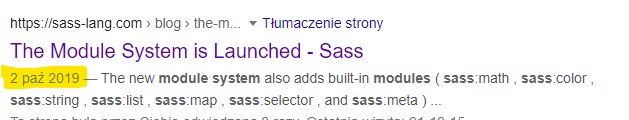

Sass
Syntactically Awesome Style Sheets
https://sass-lang.com/Sass
- It is a preprocessor scripting language that is compiled into Cascading Style Sheets*
- And it comes with two syntax flavours: SASS and SCSS**

|

|
Sass setup
- Step #1 - install Node.js LTS edition *
- Step #2 - install Sass CLI
- Step #3 - let's begin to compile Sass files
> npm install -g sass
> sass src/index.scss dist/index.css
In real world projects we mostly won't take these steps. We'll use a bundler or a JS framework instead.
Nesting
Nesting: parent selector

=>

Inheritance: control of selectors
=>
Selectors eg. ul li
will not be styled
if out of container aside nav.
Nesting rules

=>

Variables
CSS variables

=>

They still exist during runtime
Sass variables

=>

They are removed during compilation
At-Rules
css @at-rules
@font-face- to set a custom font,@media- for responsive design,@supports- to add rules only to the browser that supports the condition,@keyframes- to add an animation.
SASS: @extend

=>

Extends allow you to re-use styles of a selector
(or %pseudoselector) throughout your stylesheet.
SASS: @mixin

=>

Mixins allow you to define styles that can be re-used throughout your stylesheet.
SASS: @function

=>

Function returns a value.
SASS more at-rules - read here
Sass best practices
Organize styling in a project
Component approach
(img on the example of Angular project)

- the styling is limited to the component,
- non-component elements (e.g. buttons, form elements) are not styled at all,
- the use and styling of third party libraries (eg Bootstrap) is restricted.
Single file approach

- usually it's a file named styles.scss or main.scss,
- the file contains thousands of lines of code,
- and it is hardly readable.
Mixed approach of both previous ones
+
- much more clear structure,
- ...but not consistent ;)
Dedicated styling folder

- styling can be component-oriented,
- the styling may contain rules for non-component elements (eg. buttons and form elements),
- you can
@importand@useCSS/SASS files from NPM packages (eg. Bootstrap) - to sum up: this is probably the best way to organize your styling,
- and surely it is recommended by SASS developers.
7-1 Sass Architecture
Architecting a CSS project is probably one of the most difficult things you will have to do in a project’s life. Keeping the architecture consistent and meaningful is even harder.
Sass architecture is very opinionated.
Obviously, 7-1 Pattern is certainly not the only way of doing things, and it may or may not suit your project.
- Seven directories and one file that uses them all,
- The main style file contains
@imports or@uses of separate files, - each file in the component catalog can only contain inherited selectors,
- there are several boilerplate in GitHub - this is the most popular one,
- a great explanation of each directory can be found here.
7-1 Pattern: popular and effectively modular way to structure Sass projects:
BEM classes
BEM stays for
Block__Element--Modifier
Why BEM?

Modularity
- Block styles are never dependent on other elements on a page,
- you will never experience problems from cascading,
- you get the ability to transfer one project to anoher.
Reusability
- CSS code that you will have to maintain.
- With a set of style guidelines in place, you can build a library of blocks, making your CSS super effective.
Structure
- BEM methodology gives your CSS code a solid structure,
- that remains simple and easy to understand.
Crazy classes
search-form__button--disabled
Yes, BEM classes look weird.
7-1 Pattern
+
BEM naming convention
+

- styling is object oriented (components + non-component elements),
- code is clearly readable,
- you can
@useSCSS files from NPM packages (eg. Bootstrap), - some SASS benefits,
- weird BEM classes
SASS module system
October 2019: The Module System is Launched
News in styling are not common :)
Main feature: @use namespace system
- The reason for introducing the new system was mainly due to importing many third party libraries in the project,
- → many imported modules brought many variables,
- → it happened, that variables had the same name - which caused conflicts.
Built-in modules
@debug @warn @error- sass:color
- sass:list
- sass:map
- sass:math
- sass:meta
- sass:selector
- sass:string
Built-in values
 =>
=>

Built-in values cannot be overwritten
Let's do the livecoding of this image: